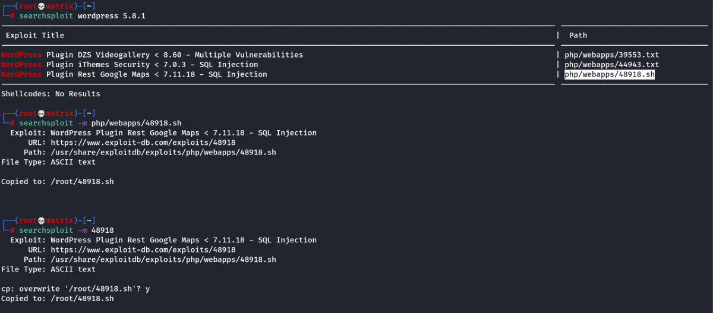

searchsploit
It is a terminal based exploit search database(Local Exploit-DB).
Usage:
searchsploit appName
eg:
searchsploit wordpress 5.8.1
To copy the exploit to present working directory.
searchsploit -m php/webapp/48918.sh
searchsploit -m 48918
